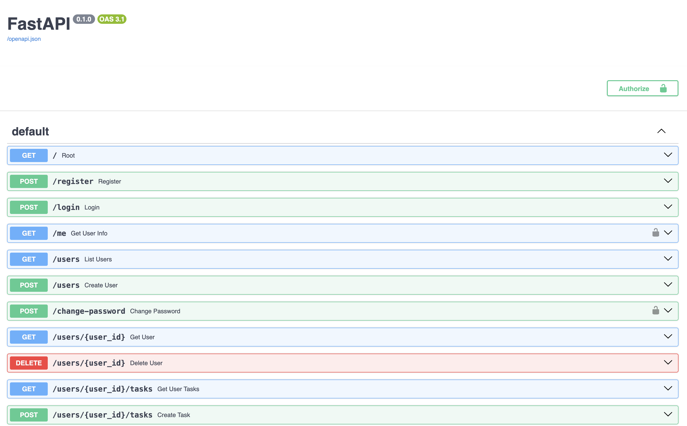

Эндпоинты API

User (Пользователь)
Регистрация пользователя
POST /register — создаёт нового пользователя, хэширует пароль и сохраняет в базу.
@router.post("/register", response_model=UserRead)
def register(user: UserCreate, session: Session = Depends(get_session)):
if session.query(User).filter(User.username == user.username).first():
raise HTTPException(status_code=400, detail="Username already taken")
hashed_pwd = hash_password(user.password)
db_user = User(username=user.username, email=user.email, password=hashed_pwd)
session.add(db_user)
session.commit()
session.refresh(db_user)
return db_user
Авторизация (вход)
POST /login — проверяет логин и пароль, возвращает JWT-токен.
@router.post("/login", response_model=Token)
def login(user: UserLogin, session: Session = Depends(get_session)):
auth_user = authenticate_user(session, user.username, user.password)
if not auth_user:
raise HTTPException(status_code=401, detail="Invalid credentials")
token = create_access_token(data={"sub": auth_user.username})
return {"access_token": token, "token_type": "bearer"}
Получить информацию о текущем пользователе
GET /me — возвращает данные пользователя, связанного с токеном.
@router.get("/me", response_model=UserRead)
def get_user_info(current_user: User = Depends(get_current_user)):
return current_user
Получить список всех пользователей
GET /users — возвращает список всех пользователей в системе.
@router.get("/users", response_model=list[UserRead])
def list_users(session: Session = Depends(get_session)):
return session.query(User).all()
Получить пользователя по ID
GET /users/{user_id} — возвращает пользователя по user_id.
@router.get("/users/{user_id}", response_model=UserRead)
def get_user(user_id: int, session: Session = Depends(get_session)):
user = session.get(User, user_id)
if not user:
raise HTTPException(status_code=404, detail="User not found")
return user
Создать пользователя
POST /users — создаёт пользователя, хэширует пароль.
@router.post("/users", response_model=UserRead)
def create_user(user: UserCreate, session: Session = Depends(get_session)):
db_user = User(username=user.username, email=user.email, password=hash_password(user.password))
session.add(db_user)
session.commit()
session.refresh(db_user)
return db_user
Удалить пользователя
DELETE /users/{user_id} — удаляет пользователя по user_id.
@router.delete("/users/{user_id}")
def delete_user(user_id: int, session: Session = Depends(get_session)):
user = session.get(User, user_id)
if not user:
raise HTTPException(status_code=404, detail="User not found")
session.delete(user)
session.commit()
return {"status": 200, "message": "User deleted"}
Сменить пароль
POST /change-password — меняет пароль пользователя, если введён старый корректно.
@router.post("/change-password")
def change_password(data: ChangePassword, session: Session = Depends(get_session), user: User = Depends(get_current_user)):
if not verify_password(data.old_password, user.password):
raise HTTPException(status_code=400, detail="Old password is incorrect")
user.password = hash_password(data.new_password)
session.add(user)
session.commit()
return {"message": "Password changed successfully"}
Задачи (Tasks)
Получить задачи пользователя
GET /users/{user_id}/tasks — возвращает список задач конкретного пользователя.
@router.get("/users/{user_id}/tasks", response_model=list[TaskRead])
def get_tasks(user_id: int, session: Session = Depends(get_session)):
user = session.get(User, user_id)
if not user:
raise HTTPException(status_code=404, detail="User not found")
return user.tasks
Создать задачу для пользователя
POST /users/{user_id}/tasks — создаёт новую задачу и привязывает к пользователю.
@router.post("/users/{user_id}/tasks", response_model=TaskRead)
def create_task_for_user(user_id: int, task: TaskCreate, session: Session = Depends(get_session)):
user = session.get(User, user_id)
if not user:
raise HTTPException(status_code=404, detail="User not found")
db_task = Task(**task.dict(), user_id=user.id)
session.add(db_task)
session.commit()
session.refresh(db_task)
return db_task
Удалить задачу пользователя
DELETE /users/{user_id}/tasks/{task_id} — удаляет задачу по ID у указанного пользователя.
@router.delete("/users/{user_id}/tasks/{task_id}")
def delete_task(user_id: int, task_id: int, session: Session = Depends(get_session)):
task = session.get(Task, task_id)
if not task or task.user_id != user_id:
raise HTTPException(status_code=404, detail="Task not found")
session.delete(task)
session.commit()
return {"status": 200, "message": "Task deleted"}
Обновить задачу
PATCH /users/{user_id}/tasks/{task_id} — обновляет информацию по задаче частично.
@router.patch("/users/{user_id}/tasks/{task_id}", response_model=TaskRead)
def update_task(user_id: int, task_id: int, task_data: TaskUpdate, session: Session = Depends(get_session)):
db_task = session.get(Task, task_id)
if not db_task or db_task.user_id != user_id:
raise HTTPException(status_code=404, detail="Task not found")
for key, value in task_data.dict(exclude_unset=True).items():
setattr(db_task, key, value)
session.add(db_task)
session.commit()
session.refresh(db_task)
return db_task
️ Теги (Tags)
Получить все теги
GET /tags — возвращает список всех тегов.
@router.get("/tags", response_model=list[TagRead])
def get_tags(session: Session = Depends(get_session)):
return session.query(Tag).all()
Получить тег по ID
GET /tags/{tag_id} — возвращает тег по его идентификатору.
@router.get("/tags/{tag_id}", response_model=TagRead)
def get_tag(tag_id: int, session: Session = Depends(get_session)):
tag = session.get(Tag, tag_id)
if not tag:
raise HTTPException(status_code=404, detail="Tag not found")
return tag
Создать тег
POST /tags — создаёт новый тег.
@router.post("/tags", response_model=TagRead)
def create_tag(tag: TagCreate, session: Session = Depends(get_session)):
db_tag = Tag(**tag.dict())
session.add(db_tag)
session.commit()
session.refresh(db_tag)
return db_tag
Обновить тег
PATCH /tags/{tag_id} — частично обновляет данные тега.
@router.patch("/tags/{tag_id}", response_model=TagRead)
def update_tag(tag_id: int, tag_data: TagUpdate, session: Session = Depends(get_session)):
tag = session.get(Tag, tag_id)
if not tag:
raise HTTPException(status_code=404, detail="Tag not found")
for key, value in tag_data.dict(exclude_unset=True).items():
setattr(tag, key, value)
session.add(tag)
session.commit()
session.refresh(tag)
return tag
️ Удалить тег
DELETE /tags/{tag_id} — удаляет тег по ID.
@router.delete("/tags/{tag_id}")
def delete_tag(tag_id: int, session: Session = Depends(get_session)):
tag = session.get(Tag, tag_id)
if not tag:
raise HTTPException(status_code=404, detail="Tag not found")
session.delete(tag)
session.commit()
return {"status": 200, "message": "Tag deleted"}
Связь задач и тегов
Привязать тег к задаче
POST /tasks/{task_id}/tags/{tag_id} — добавляет тег к задаче с уровнем важности.
@router.post("/tasks/{task_id}/tags/{tag_id}", response_model=TaskTagRead)
def add_tag_to_task(task_id: int, tag_id: int, body: TaskTagCreate, session: Session = Depends(get_session)):
task = session.get(Task, task_id)
tag = session.get(Tag, tag_id)
if not task or not tag:
raise HTTPException(status_code=404, detail="Task or Tag not found")
task_tag = TaskTag(task_id=task.id, tag_id=tag.id, importance_level=body.importance_level)
session.add(task_tag)
session.commit()
session.refresh(task_tag)
return task_tag
️ Обновить важность тега у задачи
PATCH /tasks/{task_id}/tags/{tag_id} — изменяет уровень важности у связанного тега.
@router.patch("/tasks/{task_id}/tags/{tag_id}", response_model=TaskTagRead)
def update_tag_importance(task_id: int, tag_id: int, body: TaskTagCreate, session: Session = Depends(get_session)):
stmt = select(TaskTag).where(TaskTag.task_id == task_id, TaskTag.tag_id == tag_id)
task_tag = session.exec(stmt).first()
if not task_tag:
raise HTTPException(status_code=404, detail="Tag not linked to task")
task_tag.importance_level = body.importance_level
session.add(task_tag)
session.commit()
session.refresh(task_tag)
return task_tag
Удалить тег у задачи
DELETE /tasks/{task_id}/tags/{tag_id} — отвязывает тег от задачи.
@router.delete("/tasks/{task_id}/tags/{tag_id}")
def remove_tag_from_task(task_id: int, tag_id: int, session: Session = Depends(get_session)):
stmt = select(TaskTag).where(TaskTag.task_id == task_id, TaskTag.tag_id == tag_id)
task_tag = session.exec(stmt).first()
if not task_tag:
raise HTTPException(status_code=404, detail="Tag not linked to task")
session.delete(task_tag)
session.commit()
return {"status": 200, "message": "Tag removed from task"}
Получить теги задачи с важностью
GET /tasks/{task_id}/tags — возвращает теги, привязанные к задаче, с уровнем важности.
@router.get("/tasks/{task_id}/tags", response_model=list[TagReadWithImportanceLevel])
def get_tags_for_task(task_id: int, session: Session = Depends(get_session)):
task = session.get(Task, task_id)
if not task:
raise HTTPException(status_code=404, detail="Task not found")
return [
TagReadWithImportanceLevel(
id=tt.tag.id,
name=tt.tag.name,
importance_level=tt.importance_level
)
for tt in task.tags
]